WELCOME TO TEXTRIX!!!1
The irssi-style terminal client for Matrix. Written in Rust. Encrypted end to end. Rad to the max.
(the counter is decorative. we don't count you. we don't even know you're here.)
📟 What is this?!
Remember irssi? Numbered windows, a status bar that told you everything, /commands for
absolutely everything, and you never touched the mouse (you can now, though).
Textrix is that, for Matrix: chat with anyone on any Matrix server, from a terminal, with real
end-to-end encryption, and no web browser pretending to be an app.
⭐ Features!!! ⭐
| 🔐 Encryption | End-to-end encrypted rooms, emoji verification, your recovery key, key backup. Even the local store is encrypted, with its key in your keychain. |
| 🪟 Windows | irssi-style numbered windows, a window list, split panes you can drag to size and save as layouts, and a quick switcher (Ctrl+K) that finds anything you half-remember. |
| 🌙 Background mode | Like irssi in screen: textrix --daemon keeps you connected with no terminal, textrix comes back to it, /detach leaves it running. |
| ⬆️ Upgrades | brew update && brew upgrade textrix and a running Textrix notices; /restart and you're on the new one, in the same window, with what you were typing. |
| 🔎 Search | Every room, encrypted ones too, up to 20,000 messages back in each, found instantly from an index kept encrypted on your disk. /search from:sam in:"Book Club" before:2026 pizza |
| 🧵 Threads & spaces | Threads open in their own windows. Spaces group your rooms. |
| 🖼️ Pictures! | Inline images, sharp in kitty, Ghostty, WezTerm and iTerm2, drawn in tiny blocks everywhere else, and a full-screen zoomable viewer. Drag a file onto the terminal to send it. |
| 🎤 Voice & video | See the waveform ▁▃▅▇▅▃▁, press z to hear it; videos open in your player. |
| 🌈 Code | Code blocks in colour, even on a green-screen monitor (in shades of green). |
| 🔔 Bells | Mentions, highlight words, per-room notification levels that sync with your other clients, a visual bell, and a mentions inbox. |
| 🎨 Themes | Fifty-one! Turbo Pascal blue, Procomm, C64, Amiga Workbench, Delphi 7, mIRC, a Game Boy, Ceefax, the blue screen of death, Hot Dog Stand, Solarized, Monokai, Dracula, Nord, Gruvbox, Catppuccin, synthwave (neon pink on a midnight-purple sky, totally rad), miami-heat, cemetery, vaporwave, disco, themes for colour blindness, an IBM 5151 framed in ASCII, and monochrome monitors in green, blue, red, amber or purple (on black, on 80s-airport blue, or Tron neon on pure black). Or auto, which matches your terminal. Make your own and send it to a friend, and give each room its own so work looks like work. There's also a secret way to get the green one. Ask a 1986 video game. Try them on |
| 📊 Polls, stickers & emoji | Vote in Element's polls from the keyboard (results in little bars), start your own with /poll, see stickers, and use your image packs' custom emoji. NEW! |
| 👤 Who's who | Click anyone's name for their picture, presence, role and verified devices, right beside the member list. NEW! |
| ✍️ Writing | Ctrl+X opens your own editor for the long ones; /later 18:30 sends it while you're at dinner; nicks line up in a column like irssi's. NEW! |
| 🏠 Home & gallery | F4 shows everything waiting for you (mentions, unread rooms, invitations), a key away. /media lays out a room's pictures, videos and files as tiles to flick through. NEW! |
| 🔗 Links & edits | Links show the page's title and picture, fetched by your homeserver so the site never sees you. Edited messages keep what they said before (i), ||spoilers|| stay hidden until revealed, and irssi's /exec -o uptime is back. NEW! |
| 🏖️ Away log | Go /away, come back to "while you were away: 3 mentions and 2 DMs", all in one window. And a status bar you arrange yourself. NEW! |
| 📜 Scripts | Like irssi's Perl scripts, but in Rhai: drop a file in ~/.textrix/scripts to add commands, answer messages, run timers and put things in the status bar. The examples include dice. |
| ⌨️ Commands | /join /msg /me /away /ignore /lastlog /search /alias … and a few that aren't in /help. |
📸 Real screenshots!!
Not drawn with HTML this time: the real Textrix, drawing made-up rooms (nobody's chats were harmed). Pictures come out in little blocks in any terminal, and properly in ones that do graphics.
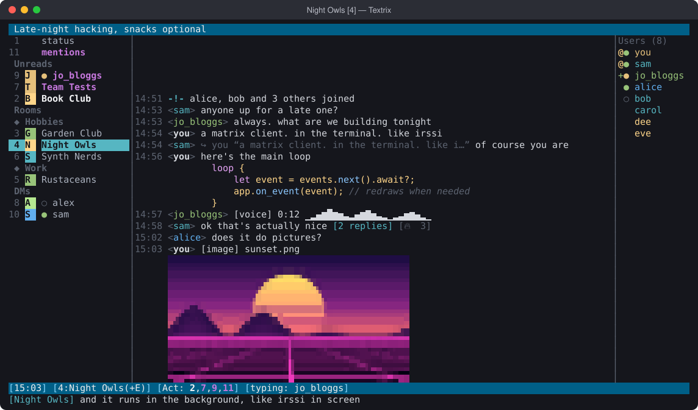
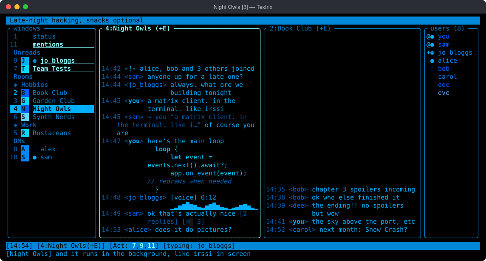
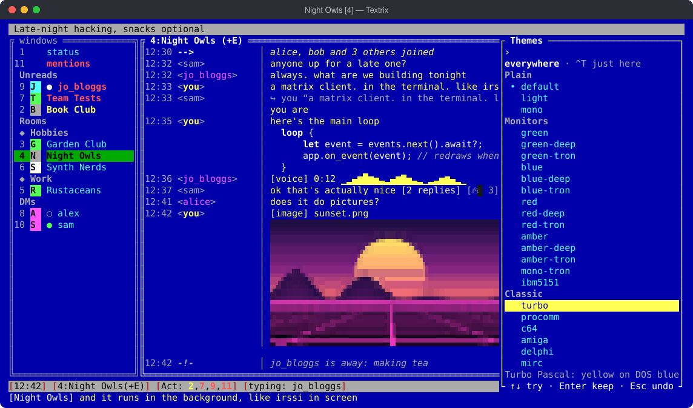
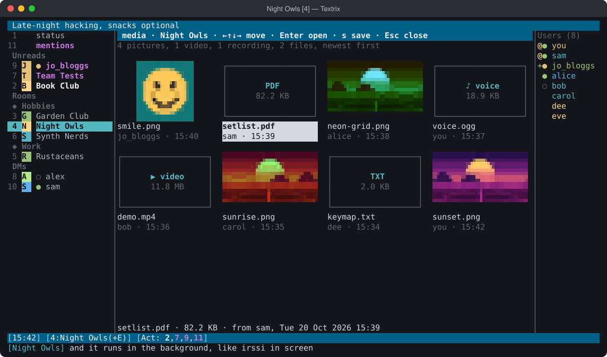
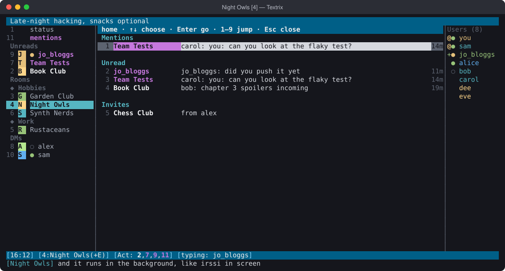
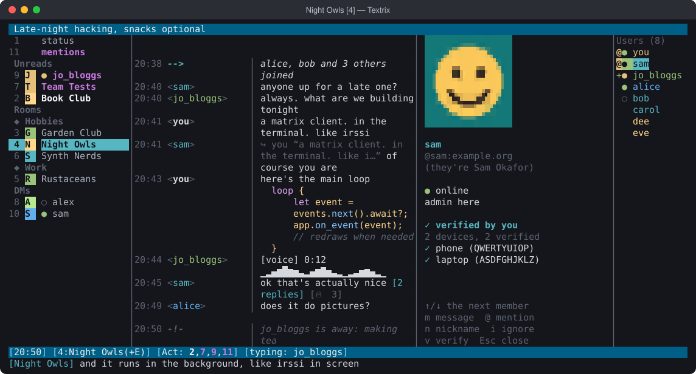
🎨 The Theme-O-Rama
Fifty-one of them! From Turbo Pascal blue to a Game Boy, Ceefax, Windows 3.1's
unforgivable Hot Dog Stand, a mirror ball, a cemetery at midnight and a
summer evening, plus themes made for colour blindness. Type /themes
and flick through them with the arrow keys, the whole screen changing as you go,
or try them on right here:
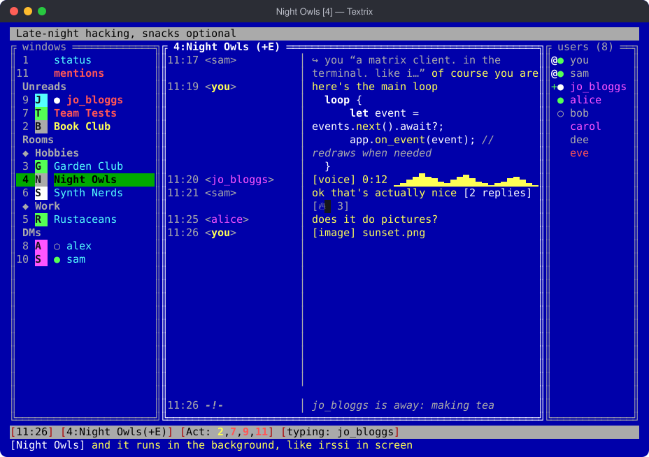
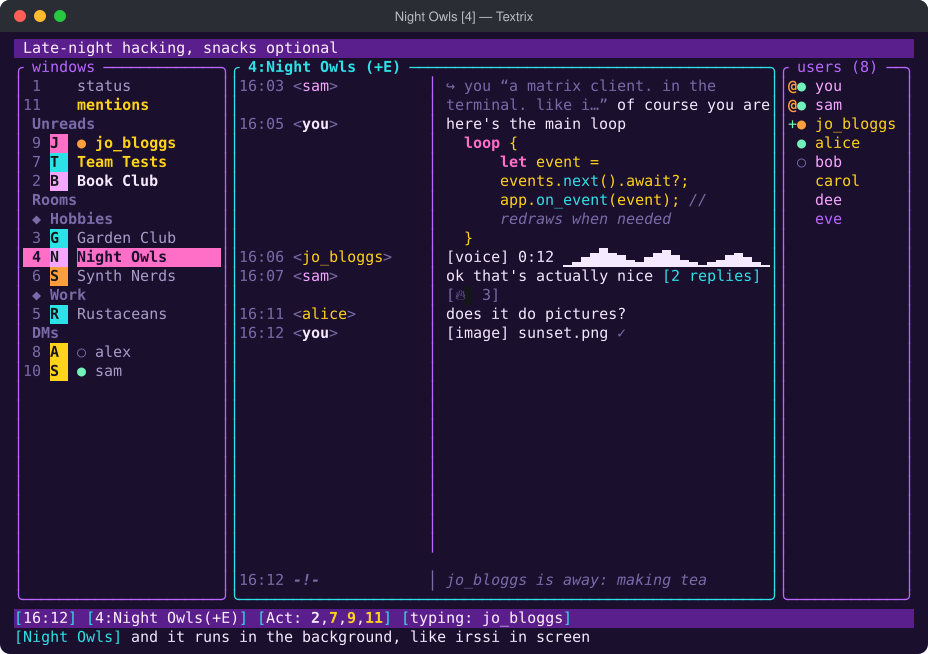
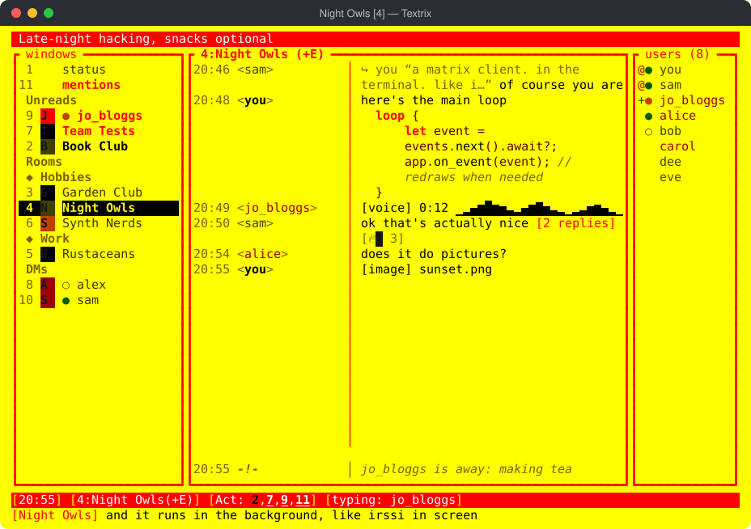
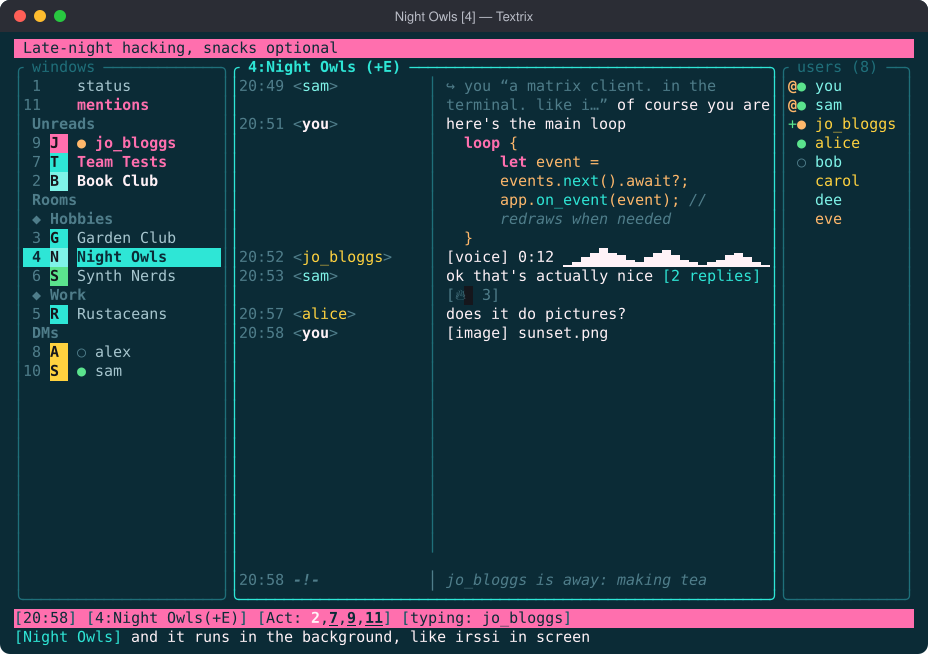
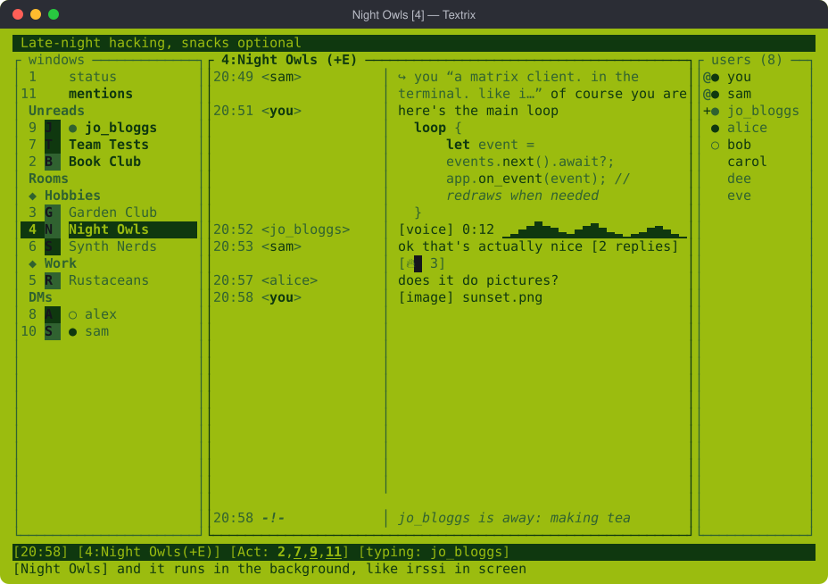
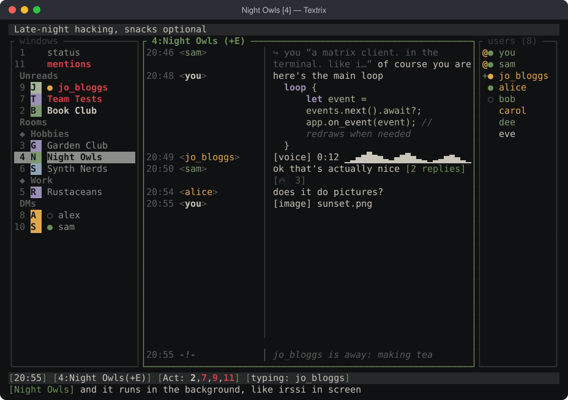
💾 Download it!!
*about 19 MB, or 47 minutes on a good day with a 56k modem
Latest version: v{{VERSION}} · 📜 what's new?
brew install seamoss/textrix/textrix cargo install --git https://github.com/seamoss/Textrix brew update && brew upgrade textrix # later, for the next one
Then put your server in ~/.textrix/.env (copy
.env.example), run
textrix, and you're on the information superhighway. The
README has the rest.
📖 Sign my guestbook!
Found a bug? Got an idea? Want to say hi? The guestbook is GitHub Issues. Please no flame wars, this is a family homepage.
AT 80×24
RUST 🦀
COMPLIANT
INSIDE
NO ADS
IN NOTEPAD*